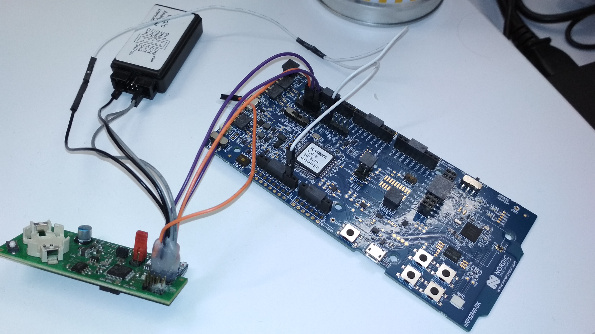

Regent / ClcModule
CLC (connected lighting controller)
General
The code for regent is part of the ClcModule. Currently, the ClcModule uses the ClcComm for the UART Communication with the regent controller and the ClcAppConnection for communicating with the Tunable White App. For Specification of the Communication, look at:
Internally, regent uses modbus, and we use a very similar structure to communicate with their controller and send that information to our cloud.
Setup

Flashing and developing FruityMesh on the CLC
| Do these steps in this order, otherwise, the CLC might get destroyed. Only plug in lamp power in the end! |
-
Attach the Connector to the plug near the BLE module (as shown in the picture). The "CPU" marking should point to the nearby cpu.
-
Attach the clc to a debugger (Debugger must be switched off or disconnected from USB)
-
Attach the clc to the lamp.
-
Plug in the power of the lamp.
-
Switch on the debugger.
⇒ When disconnecting, switch off Debugger first, then power off lamp.
You can use Segger RTT to work with a terminal if activated because the UART is occupied and used between the two chips.
Flashing the Regent Controller
-
Attach the debug connector to the other plug in the corner of the board
-
Chipset is STM32F091CC (no optional bytes), SWD (speed 1000)
-
Use JFlashLite 5.10u (Newer versions do not work with a nordic branded segger debugger)
-
Flash the new binary
-
You can also erase the board first, but the clcloader.hex has to be flashed first and then the new firmware
-
You must reset the board manually (pressing the reset button on the debugger might work)
| Firmware updates can be .img, .bin, .hex. When flashing the CLC, the .hex has to be used. The one packaged in component updates is the .img version. The .bin version is only used when updating the lamp with the batch files from regent. |
Debugging
Testing the Firmware Update
To test the firmware update, FruityDeploy can be used to flash the update binary on the node directly.
//FruityDeploy flashing: dfuparams <image start is 0 for binary files> <image size is size of .img in bytes> <free space page can be seen when fruitymesh boots up>
--args dev_clc_mesh_nrf52 --dfuimage clm-01.12.XX-4b344bbf-rel.img --dfuparams 0 61440 65
//To test the update request
clc updatereq 15
//To start the update for testing
//params: <moduleId>, <freeSpaceAddress = PAGE_SIZE*freeSpacePageIndex>, <size of .img>
clc update 15 266240 61440